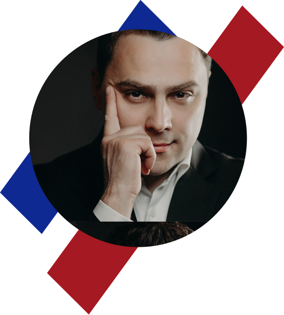
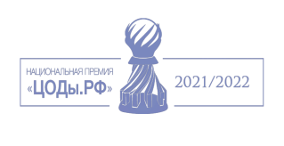
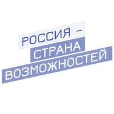
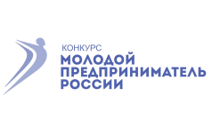

Сильченко Ален
Павлович
Павлович
Основатель
Генеральный директор
Кандидат педагогических наук
Генеральный директор
Кандидат педагогических наук
Мы практикуем командную разработку. Во-первых, это значительно ускоряет запуск проекта.
Диссертация на соискание ученой степени кандидата педагогических наук
«Культурологическая модель предметного обучения в основной и средней школе (на примере информатики)» (ФГБНУ «Институт стратегии развития образования РАО», 2020 год).
Ален Павлович Сильченко — соавтор учебного пособия по информатике (Самылкина Н. Н., Сильченко А. П. «Информатика, все темы для подготовки к ЕГЭ», М.: Эксмо, 2011, 208 с.), автор более 40 научных публикаций.
Является разработчиком цифровой педагогической платформы Allis.School для сопровождения образовательной деятельности.
Окончил математический факультет ТвГУ в 2008 году, имеет степень бакалавра и магистра математики, затем с отличием окончил «Международный̆ институт государственной̆ службы и управления» РАНХиГС при Президенте РФ в 2013 году. В 2016 году прошел научную стажировку в центре теории и методики обучения и воспитания математики и информатики ФГБНУ ИСРО РАО.
Ален Павлович Сильченко — соавтор учебного пособия по информатике (Самылкина Н. Н., Сильченко А. П. «Информатика, все темы для подготовки к ЕГЭ», М.: Эксмо, 2011, 208 с.), автор более 40 научных публикаций.
Является разработчиком цифровой педагогической платформы Allis.School для сопровождения образовательной деятельности.
Окончил математический факультет ТвГУ в 2008 году, имеет степень бакалавра и магистра математики, затем с отличием окончил «Международный̆ институт государственной̆ службы и управления» РАНХиГС при Президенте РФ в 2013 году. В 2016 году прошел научную стажировку в центре теории и методики обучения и воспитания математики и информатики ФГБНУ ИСРО РАО.




Награды
- Диплом победителя Национальной премии “ЦОДы.РФ” в номинации “Бизнес-прорыв” - АО «Концерн Росэнергоатом».(2020/2021)
- Победитель Всероссийского конкурса «Моя страна — моя Россия» в номинации «Моя педагогическая инициатива» — 2020 г. Диплом 2 степени.
- Лауреат медали «Молодым ученым за успехи в науке» Российской академии образования — 2019 год.
- Обладатель Премии Попечительского совета Российской академии образования за результаты научно-исследовательских, экспериментальных и эмпирических работ, внесших значительный вклад в развитие педагогики — 2019 год.
- Почетная грамота губернатора Тверской области за личный вклад в развитие образования региона (2017 г.) (губернатор Тверской области И. М. Руденя).
- Почетная грамота главы администрации Конаковского района за профессиональное мастерство (2018 г.) (Администрация Конаковского района Тверской области, глава В. Э. Шор).
- Благодарность за активное участие в фестивале лучших педагогических практик и представление опыта по теме «Цифровая дидактика и инновационные дидактические электронные ресурсы и продукты учителя» (приказ № 410 - ОД от 14.08.2017).
- Диплом победителя регионального этапа Всероссийского конкурса «Учитель года России — 2017» (Правительство Тверской области, Министерство образования Тверской области, министр И. А. Сенникова).
- Диплом победителя регионального этапа Всероссийского конкурса «Молодой предприниматель России — 2015» (Министерство экономического развития Тверскойобласти).
- Почетная грамота за многолетний добросовестный труд, высокий профессионализм и значительный личный вклад в развитие экономики Тверской области (зам. Председателя Правительства Тверской области — министр экономического развития верской области, приказ № 19 от 29.01.2021).
- Диплом за активное участие в работе экспозиции и деловой программе Министерства науки и высшего образования Российской Федерации на форуме «Открытые инновации» (Сколково, 2019/2020).
- Почетная грамота ректора ТвГУ за высокие достижения в научной и инновационной деятельности по итогам 2020 года (Л. Н. Скаковская, приказ № 78-К от 28.01.2021).
Образование
- Институт стратегии развития образования Российской академии образования (Москва)
- Российская академия народного хозяйства и государственной службы при Президенте Российской Федерации (Москва)
- Тверской государственный университет (Тверь)
Повышение квалификации
- Сертификат проектного наставника Университета 2035 (по методике сопровождения команды студентов в рамках проектно-образовательного интенсива «От идеи к прототипу» по модели Университета 20.35), 2021 год.
- Образовательная программа «ЗВЕЗДНЫЙ ПУТЬ» — 2021 г. для победителей и финалистов проектов и конкурсов президентской платформы «Россия — страна возможностей» — Мастерская управления «СЕНЕЖ», 2021 год.
- «Цифровые технологии в преподавании профильных дисциплин» (144 ч.) АНО ВО «Университет Иннополис» (г. Иннополис) — 2021 год.
- «Управление бизнес-проектами в цифровой экономике» (72 ч.) ФГБОУ ВО «Юго-Западный государственный университет» — 2020 год.
- «Математическое образование в эпоху цифровой трансформации» (24 ч.) ФГБОУ ВО «Тверской государственный университет» — 2020 год.
- «Остров 10-22» (128 ч.) АНО «Университет Национальной технологической инициативы 2035» (Сколково) — 2019 год.
- «Киберспорт в университете. Теория и практика, хайп, наука, инновации,индустриальные партнеры» (20 ч.) Лаборатория А. С. Сомова (Сколково) — 2019 год.
- «Модель формирования образовательных результатов обучающихся при изучении информатики в старшей школе» (16 ч.) ФГБНУ «Институт стратегии развития образования Российской академии образования» — 2016 г.
Гранты, проекты
- Разработчик платформы тайного голосования Российской академии образования (Проведение выборов членов-корреспондентов и академиков РАО в 2021 г.).
- Разработчик платформы конкурсных отборов для Российской академии образования.
- Соавтор, разработчик, исполнитель инновационного проекта «Центр цифрового педагогического сопровождения обучения, совмещенного с работой, с учетом европейских практик WBL» — Федеральная инновационная площадка ТвГУ / ООО «Лаборатория Сильченко» — 2021 г.
- Разработчик цифровой педагогической платформы Allis.School.
- Разработчик платформы для онлайн-обучения (цифровые мастерские различных направлений).
- Исполнитель проекта РФФИ № 20-013-00150А «Теоретико-методологическое обоснование и технология разработки цифрового образовательного контента в образовательной организации» 2020–2021 гг.
- Соисполнитель Государственного контракта Министерства науки и высшего образования РФ № 13.597.12.0042 на выполнение работ по созданию электронного архива выпусков научных журналов по тематическому направлению «Науки о Земле и энергетика» (2020 г.).
- Соисполнитель Государственного задания Министерства просвещения РФ № 04.Z39.11.0010 «Разработка комплекса мер по дебюрократизации образовательных организаций системы общего образования (2019 г.).
- Соавтор дополнительной общеобразовательной общеразвивающей программы «КИБЕРСПОРТ». Организатор первой региональной киберспортивной школы «GlobalGamingSchool» (2019 г.).
Экспертная деятельность
- Эксперт заседания Экспертного совета по негосударственному образованию и государственно-частному партнерству в сферах образования и науки и Экспертного совета по информационным технологиям в сфере образования и науки Комитета по образованию и науке Государственной думы ФС РФ (11.03.2021 г.).
- Региональный эксперт Агентства стратегических инициатив.